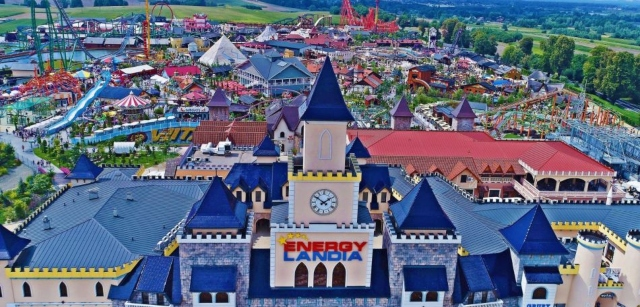
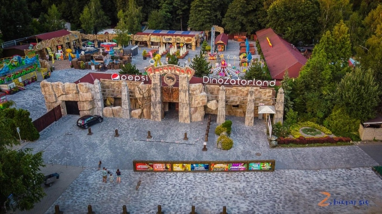
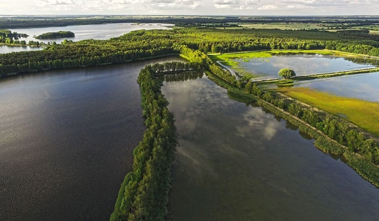
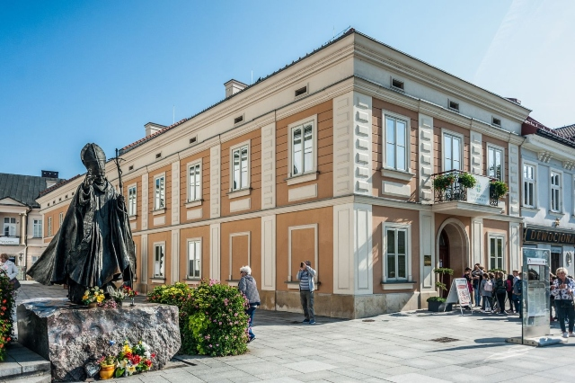
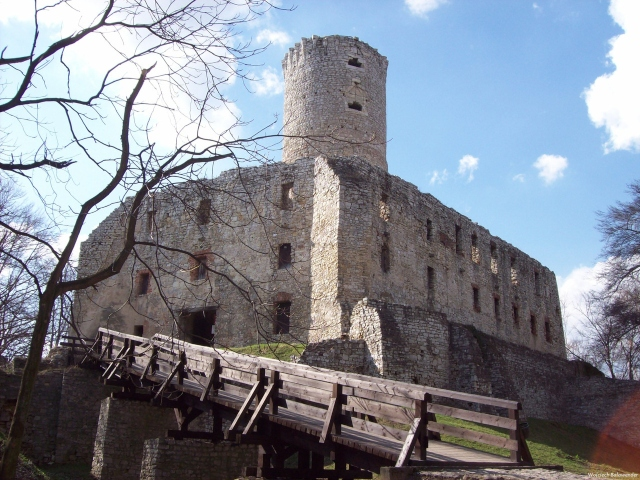
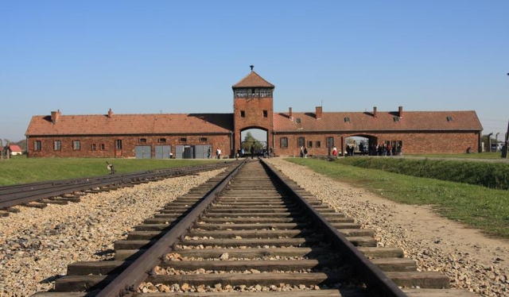

aleja 3 Maja 2, 32-640 Zator czas dojazdu: 6 min
Park rozrywki Energylandia
Jedną za najpopularniejszych atrakcji, która znajduje się zaledwie 6 minut drogi samochodem od naszych apartamentów jest Park Rozrywki Energylandia. W tym miejscu dobra zabawa nie ma końca! Niezliczone rollercoastery, budki z jedzeniem oraz imprezy okolicznościowe to tylko ułamek z tego, co oferuje nam to miejsce. Wbrew pozorom nie jest to park przeznaczony wyłącznie dla dzieci. W Energylandii każdy znajdzie coś dla siebie.

Park rozrywki Zatorland
Zatorland to bardzo ciekawa propozycja na spędzenie wolnego czasu. Czas dojazdu do tego parku wynosi zaledwie 7 minut. Znajdziemy tutaj między innymi ruchome dinozaury, Lunapark, Park Owadów oraz Park Mitologii. W tym parku czekają na nas niezapomnianew wrażenia!

Parkowa 7, 32-640 Zator czas dojazdu: 7 min
dolina karpia
Dolina Karpia to obszar siedmiu gmin położonych w Małopolsce, znajdujący się w powiatach oświęcimiskim i wadowickim. Jest to teren historycznego zagłębia hodowli karpia, którego powierzchnia liczona jest w setkach hektarów. Można tu świetnie spędzić czas wolny. Tereny nadają się do aktywnego wypoczynku, podczas którego można podziwiać piękną przyrodę i rozkoszować się ciszą.

Dolina Karpia, 32-640 Zator czas dojazdu: 7 min
muzeum jana pawła ii
Niedaleko Apartamentów na Sosnowej znajduje się miasto Wadowice, z którego pochodzi papież Jan Paweł II. W rodzinnym mieście Karola Wojtyły udostępniony jest zwiedzającym dom, w którym mieszkał. Można w nim podziwiać wiele ekspozycji opowiadających o młodzieńczych latach Papieża Polaka, jego pontyfikacie, wartościach, według których żył oraz o wielu mądrościach, które po sobie zostawił.

Koscielna 7, 34-100 Wadowice czas dojazdu: 25 min
zamek lipowiec
Historia Zamku Lipowiec sięga średniowiecza. Zajmowali go onegdaj biskupi krakowscy. Z jego wieży rozpościera się piękny widok na panoramę okolic Zatora i Oświęcimia. Skansen, karczma oraz amfiteatr to tylko niektóre za atrakcji, jakie oferuje nam to miejsce. Zdecydowanie warte odwiedzenia.

Zamkowa 16, 32-551 Babice czas dojazdu: 14 min
muzuem Auschwitz-Birkenau
Do tego miejsca absolutnie nie pasuje słowo 'atrakcja', natomiast zdecydowaliśmy umieścić je w tej sekcji gdyż jest to bardzo znaczące dla historii naszego kraju muzeum. Nie jest ono przeznaczone dla zwiedzających w każdym wieku. Tym niemniej warto przynajmniej raz w życiu je odwiedzić, gdyż lekcja historii, którą z niego wyniesiemy będzie z pewnością niezapomniana oraz bardzo wartościowa.

Wiezniow Oswiecimia 20, 32-603 Oswiecim czas dojazdu: 29 min